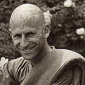

|
LOVE AND ATTACHMENT  |
Venerable Santacitto (Stephen Saslav) was born of Jewish parents in
Brooklyn, New York City in 1947. He excelled at mathematics in high
school and went on to study at university. |
|
The following teaching has been adapted from a session of questions
and answers which took place during a retreat led by Venerable Santacitto
at Amaravati, September 1988. QUESTION: Could you speak on the differences and similarities of love and compassion? ANSWER: Compassion is a sensitivity to the experience
of suffering, or dukkha: a sensitivity of heart to the suffering of
others. It's a 'non-separation' from our own heart's response on sensing
suffering in another. And because it is a kind of suffering in itself,
it impels action. However, since it's not a suffering arising out of
selfishness -- that is, from our own sense of separateness -- it doesn't
impel blind action. In taking one beyond oneself, the experience of
compassion is a very powerful opportunity for the arising and development
of wisdom. Probably the easiest way to outgrow ourselves is through
the response of compassionate action. Q: Is devotion another kind of love? Can it be a form of cultivating love? A: Yes; I would say the experiences of devotion and love are very similar. We could say, devotion is a love directed towards someone for whom we feel respect. It includes a sense of gratitude also for the benefits that we have received. Q: Would you say that it's possible to experience a devotional heart quality without a human being as the object -- maybe towards a tree? A: Yes; and there also you are feeling gratitude for what the tree gives you by its existence. Q: When I see nature, I am so full of gratitude, but that seems to be a kind of attachment. I try to see the attachment, but it's difficult. Someone once told me: 'If you go on like this, you will never be free.' [Laughter] I just love trees and birds and nature . . . and I find I'm having to change . . . I don't know how to deal with it. A: It's true that some of these positive qualities of heart may come under the classification of 'attachments', but they can be pretty darned healthy attachments. I sometimes like to look at the practice path as being similar to climbing a ladder; so long as what we're holding on to doesn't obstruct our ability to pull ourselves further upwards, then a so-called attachment might be serving a useful function. However, if we're holding on to a higher rung of the ladder but won't let go of a lower one, then we're stuck. We've got a problem. So holding on to something that is keeping us from going on, even if it's pleasurable, is blocking progress. Q: Yes, but I'm not sure that I want enlightenment to be like that. [Laughter] A: Eventually, we have to let go of everything -- but in the right time. We shouldn't try to force ourselves to let go of things! It's just that from time to time life happens to present us with opportunities where we can either let go or not let go. Q: Is 'letting go' a necessary part of meditation? A: It's entirely up to the individual. There is no need
to feel that you have to let go of your devotion towards nature. But
later on, you may begin to sense something more valuable in your life,
the development of which could be aided by a more balanced relationship
with nature. For example, you may begin to feel a greater need for the
power of equanimity, finding that always gushing outwards towards nature
is something that is preventing you from further blossoming. So you
may realise that equanimity need not be a negation or rejection. It's
more a matter of allowing the appreciation of nature to settle to a
deeper level. It's starting to recognise the nature within ourselves
as well as the nature 'out there'. Q: It's so sad to hear people always complaining about everything. If only they would just walk outside . . . A: Yes, we tend to get lost into our personal space and limit the mind. Just walking outside and opening up can be a way of letting things free. Q: Do you think that there is symbolic meaning to the Buddha's getting enlightened under a tree? Maybe it means that we can learn from nature. Trees can teach us how to refine ourselves. We can come to understand how important it is to give back to nature what has been taken away. A: That is a very good point; the Buddha was born under
a tree, enlightened under a tree, and died under a tree. And he said
that sitting under trees was a good thing to do. His recommendation
to his bhikkhus was: 'There are these trees, go, sit.' |
| Home Page |